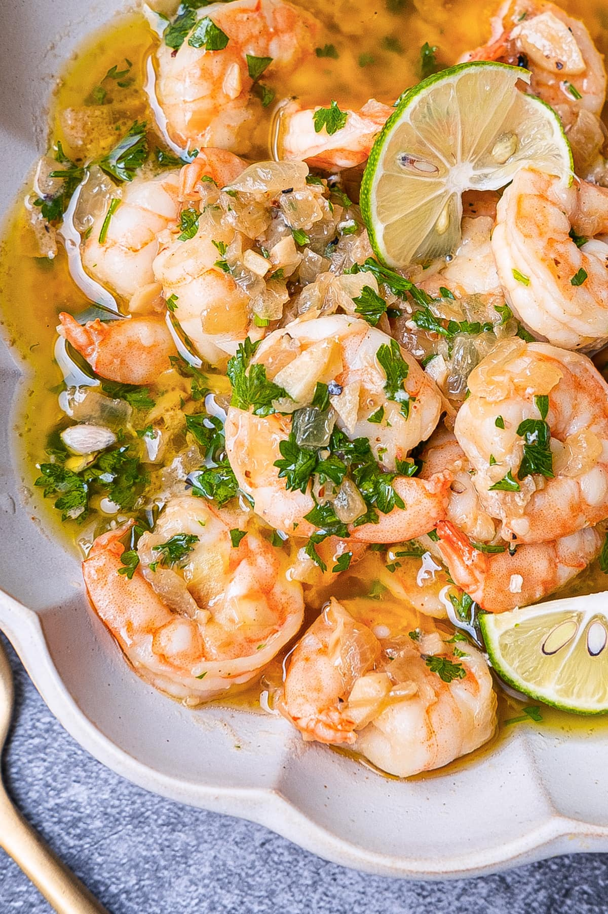

White Wine Shrimp

Description
This is one of the fancier meals we cover and yet it is delightfully simple!
This dish is rich with flavor that dance across the palate highlighting citrus,
Umami, and freshness of seafood all on one plate! Whether it's a night for two
or it's just for you. This dish is an absolute delicious choice!
Ingredients
- 8 ounces uncooked linguine
- 1/4 cup butter
- 2 tsp finely chopped fresh garlic
- 1 tsp dried parsley flakes
- 1/2 cup dry white wine
- 16 oz medium raw shrimp, peeled, deveined
- 1/2 cup shredded Parmesan cheese
Directions
- Cook pasta according to package directions. Drain; keep warm. Set aside
- Melt butter in 12 inch skillet over medium heat until sizzling. Add garlic
and parsley; saute 30 seconds. Add wine; cook 1 minute. Add shrimp; cook, turning once,
2-3 minutes or until shrimp are pink.
- Add hot, cooked pasta. Toss lightly until pasta is well coated. Sprinkle with Parmesan cheese.